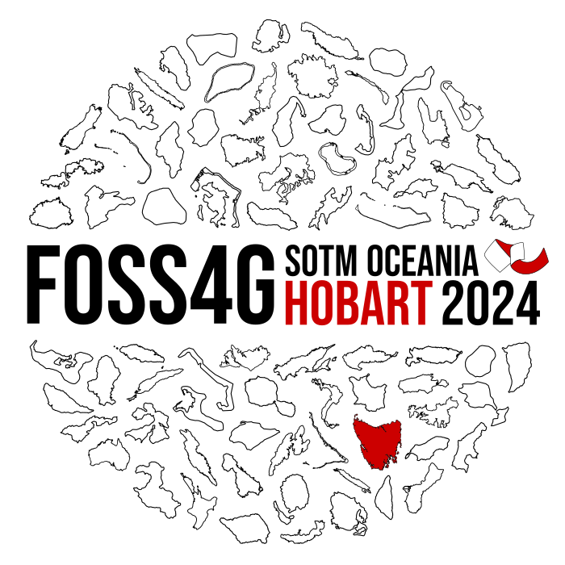
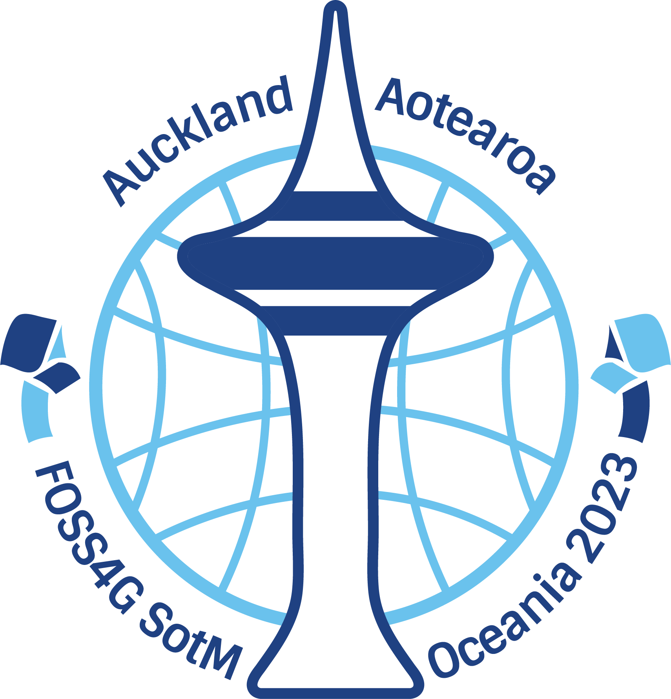

FOSS4G 2025/Logo Competition
Calling all designers and designers-to-be. We are looking for a logo for FOSS4G 2025.
The FOSS4G 2025 Local Organising Committee is thrilled to announce a design competition for our official conference logo. We need your creative flair to craft a bold and recognizable emblem for the conference, which will be held in Auckland from 17-22 November, 2025.
Whether you're a seasoned designer, a hobbyist, or even a team of creative thinkers (yes, design agencies, you're welcome too!), this is your chance to leave your mark on the open-source geospatial community.
What's in it for you?
Bragging rights, of course! Your logo will represent FOSS4G 2025 across digital and
print platforms, conference swag, and beyond. Plus, you'll gain the admiration of
mappers, coders, and geospatial enthusiasts from all corners of the globe.
Important Details
- Design Brief: See below for guidance on how to create your logo.
- Submission Deadline: Entries must be uploaded to the OSGeo Wiki by Monday, 10th March 2025. (Pro tip: early birds catch more feedback!)
- Licensing: By submitting, you agree to assign an open license so that OSGeo Oceania can use the logo across various mediums. (Don't worry, we'll give you all the credit!)
- Refinements: The committee may collaborate with the winner to fine-tune the design for maximum impact.
- Voting: The community will cast their votes to decide the winning logo.
Need inspiration? Check out examples of past FOSS4G logos below or explore more on the FOSS4G SotM Oceania 2024 wiki page.


How to enter
- File Formats: Create your logo in PNG format and also in a scalable format, such as SVG or PDF. (Think big - your logo might end up on a billboard!)
- Not a pro with scalable formats? No worries! Submit what you've got - we're here to help make it work
- Upload Options:
- Upload your logo to the OSGeo Wiki upload link
- Or email your entry to admin@foss4g-oceania.org or logo@foss4g-oceania.org
- Don't forget to share it! Include your logo on the FOSS4G 2025 entries page here (If you send it via email, we'll handle the upload for you - consider it part of the service)
Prize
- A full conference registration (your golden ticket to all the geospatial action!)
- A ticket to the conference dinner (great food, great company, and maybe even a round of applause!)
- Exclusive swag featuring your logo (because who doesn't love showing off their own masterpiece?)
Create a design that dazzles, and you could be the star of the show - literally!
Distribution
- The conference website, social media, flyers, and emails
- Sponsor communications and all sorts of conference swag (think t-shirts, bags, lanyards, pens - you name it)
- Printed materials at the conference banners and the official conference guide
- Web-based button images for use on third-party websites, blogs, or wherever people want to proudly promote their speaking gig or attendance
In short, your design will be the face of the conference - seen by geospatial geeks, enthusiasts, and the world!
Design Brief
Your design should embody the spirit of FOSS4G 2025 while meeting the following guidelines:
Must-Haves- OSGeo/FOSS4G Ribbon: Incorporate elements of the iconic "ribbon" used in past FOSS4G conference logos (Download)
- Oceania & New Zealand Themes: Reflect the region and host country in your design
- T-Shirt Friendly: Use a minimal color palette to ensure low-cost, high-quality printing
- Versatility: The design should work well on both light and dark backgrounds (or include versions for each)
- File Formats: Submit your logo in PNG and a scalable format like SVG or PDF
- Originality: Ensure your design stands out from logos of other mapping conferences (e.g., Where 2.0, ESRI, SOTM)
- Neutrality: Avoid references to sponsor brands, related companies, or copyrighted material that isn't yours
- Provide variations for different sizes (e.g., a main logo and a simplified version for badges)
- Geospatial/mapping concepts
- The potential of open-source geospatial tools
- Learning and education
- Community and openness
- Intelligence and trustworthiness
- The spirit of a global movement
- Corporate dominance as the sole focus
- Overcomplexity
- Expensiveness
- Exclusivity for geeks
- A closed or unwelcoming community
Review and Vote on Entries
Please visit the FOSS4G 2025 Logo Entries page to view the entries and vote for your favorite.